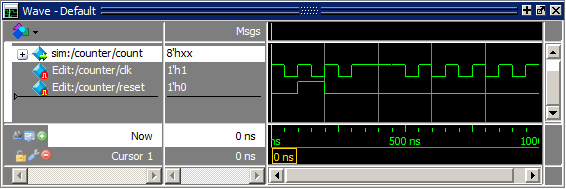
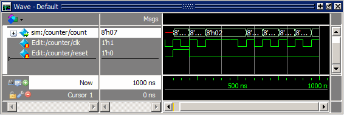

Importing an EVCD File
Earlier
in the lesson you exported the created waveforms to an extended
VCD file. In this exercise you will use that file to stimulate the counter design
unit.
Procedure
- Load
the counter design unit and add waves.
- Enter
the following command at the Questa SIM>
prompt.
vsim -voptargs="+acc" counter
- In the Objects window, right-click count and select Add Wave.
- Enter
the following command at the Questa SIM>
prompt.
- Import
the VCD file.
- Make sure the Wave window is active, then select from the menu bar.
- Double-click export.vcd.
The created waveforms draw in the Wave window (Figure 1).
Figure 1. EVCD File Loaded in Wave Window - Click
the Run -All icon.

The simulation runs for 1000 ns and the waveform is drawn for sim:/counter/count (Figure 2).
Figure 2. Simulation results with EVCD FileWhen you import an EVCD file, signal mapping happens automatically if signal names and widths match. If they do not, you have to manually map the signals. Refer to Signal Mapping and Importing EVCD Files in the User’s Manual for more information.